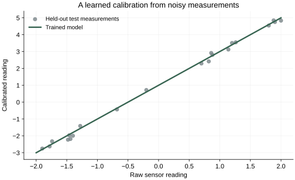

Machine learning · A practical guide
Understanding PyTorch
From tensors to a model that learns: one example, one update at a time.
A training loop can look surprisingly small: make a prediction, calculate a loss, call backward(), and take an optimizer step. The difficult part is understanding what each line owns. Which numbers are data? Which numbers are learned? What changes when we call backward()?
We will answer those questions by teaching a model to calibrate a sensor. First we will follow one update with numbers small enough to calculate by hand. Then we will assemble a runnable program and extend the model into a small neural network.
You need basic Python, but no previous PyTorch experience. All examples run on a CPU. The code was checked with Python 3.12.4 and PyTorch 2.14.0. If you need to install PyTorch, use the official installation selector for your system.
The thread to follow: predict → measure error → compute gradients → update parameters. PyTorch provides the machinery for these steps. We still choose the model, the data, and what counts as a useful result.
1. What PyTorch provides
A neural network is a parameterized computation: inputs go in, learned numbers help transform them, and predictions come out. Training adjusts those learned numbers. Python can express the calculation, but writing efficient array operations and all their derivatives by hand becomes cumbersome as the model grows.
PyTorch brings three pieces together: tensors for numerical computation, automatic differentiation for computing derivatives, and model-building and optimization tools. Its Python package is imported as torch. PyTorch is the framework’s name; torch is the name you see in code.
A NumPy array and a PyTorch tensor can both hold a table of numbers. PyTorch additionally integrates those computations with gradient tracking and accelerator execution. A tensor does not automatically live on a GPU or require gradients; both are choices.
PyTorch is especially useful when you want to define a neural network or customize its training. For a conventional regression, random forest, or preprocessing pipeline, scikit-learn may offer a shorter path. Keras offers a higher-level deep-learning interface and can use PyTorch as a backend. Our reason for using PyTorch here is that the learning process stays visible.
2. Tensors: numbers with a shape
Suppose a sensor gives raw readings, and a trusted reference instrument gives calibrated readings. A paired measurement is one example. The raw reading is the input feature; the reference reading is the target, also called a label.
For our first calculation, we have two perfect measurements: raw 1 should become 3, and raw 2 should become 5.
import torch
x = torch.tensor([[1.0], [2.0]])
y = torch.tensor([[3.0], [5.0]])
print(x.shape) # torch.Size([2, 1])
print(x.dtype) # torch.float32
print(x.device) # cpuA tensor is an array with a specified number of dimensions. A scalar has shape []; a vector of two numbers has shape [2]; our two-row, one-column table has shape [2, 1]. The shape tells you how to interpret the organization of the numbers.
Two sensor measurements, with one input feature per measurement. Later, a batch of 20 measurements will have shape [20, 1].
The nested brackets deliberately preserve a feature dimension. [[1.0], [2.0]] and [1.0, 2.0] contain the same values but have different shapes. Many bugs come from treating them as interchangeable.
dtype describes how individual numbers are represented. We use floating-point values for this regression example. device says where a tensor resides, such as CPU or a supported GPU. The comments above assume PyTorch’s standard defaults. See the tensor introduction for the basic operations.
PyTorch can apply an operation to an entire tensor. Multiplying x * 2 multiplies every element. The operator * is element-wise multiplication; @ is matrix multiplication. We only need element-wise arithmetic until we introduce layers.
3. A prediction and a loss
Choose a model simple enough to inspect:
The weight w controls the slope; the bias b shifts the result. Both are parameters: numbers training is allowed to change. The input readings are data. Feeding in another reading should change the prediction, without changing the parameters by itself.
w = torch.tensor(1.0, requires_grad=True)
b = torch.tensor(0.0, requires_grad=True)
predictions = x * w + b
loss = ((predictions - y) ** 2).mean()
print(predictions.detach().tolist()) # [[1.0], [2.0]]
print(loss.item()) # 6.5requires_grad=True asks PyTorch to track the information needed to differentiate this computation with respect to these tensors. It does not make their values update automatically. We do not need gradients with respect to x or y to train these parameters.
Computing the predictions is the forward pass. The loss turns prediction errors into a number we aim to reduce. Here it is mean squared error, or MSE: square each error and average.
| Input | Target | Prediction | Error | Squared error |
|---|---|---|---|---|
| 1 | 3 | 1 | −2 | 4 |
| 2 | 5 | 2 | −3 | 9 |
The loss is (4 + 9) / 2 = 6.5. Squaring prevents positive and negative errors from canceling and gives larger errors more influence. This is a design choice, not a universal definition of “good.”
loss.item() extracts a Python number from a one-element tensor, useful for logging. detach() returns a tensor disconnected from gradient history; here we use it to display predictions. Keep the original tensor loss for differentiation. A Python float cannot carry the computation graph.
4. Autograd: finding how to improve
The loss tells us how wrong the current predictions are. A gradient tells us how sensitive that loss is to a small change in each parameter, with the other parameters held fixed.
For this model, the two gradient components are:
∂loss/∂b = mean(2 × error) = −5
You do not need the calculus to follow the interpretation: near the current values, increasing either parameter would decrease the loss. The negative signs tell us that direction. The magnitudes describe local sensitivity, not an instruction to jump directly to the best parameter values.
loss.backward()
print(w.grad.item()) # -8.0
print(b.grad.item()) # -5.0
print(w.item()) # 1.0 -- unchanged
print(b.item()) # 0.0 -- unchangedAutograd is PyTorch’s automatic differentiation machinery. In ordinary eager execution, the forward computation builds a graph of tracked operations. Backpropagation traverses that computation in reverse, applying the chain rule to calculate gradients. These names are related: autograd is the machinery; backpropagation is the reverse calculation used here.
It does not try a thousand nearby weights to estimate a direction. It combines derivatives of the operations that actually ran. For our scalar loss, backward() places gradients in the .grad fields of these trainable leaf tensors. See the official autograd introduction.
backward() computes gradients. It does not update the weights. After this call, our predictions would still be 1 and 2 if we ran the same model again.
5. The optimizer actually changes the weights
An optimizer applies an update rule to selected parameters. With basic stochastic gradient descent, or SGD, the rule is:
Use a learning rate of 0.1. Then w = 1 − 0.1 × (−8) = 1.8, and b = 0 − 0.1 × (−5) = 0.5.
optimizer = torch.optim.SGD([w, b], lr=0.1)
optimizer.step()
with torch.no_grad():
updated = x * w + b
updated_loss = ((updated - y) ** 2).mean()
print(updated.tolist()) # approximately [[2.3], [4.1]]
print(updated_loss.item()) # approximately 0.65The predictions moved closer to their targets and the loss fell from 6.5 to 0.65. One update has helped; it has not yet recovered the generating relationship y = 2x + 1. The no_grad() context avoids recording a gradient graph for this measurement.
The learning rate controls the update size. Too large a step can overshoot and increase the loss; too small a step can make progress slow. Unlike w and b, the learning rate is a hyperparameter: a setting we choose rather than a parameter this training loop learns.
SGD’s stochastic name comes from estimating gradients using sampled examples or batches. The same optimizer can also take a full-dataset gradient step. More elaborate optimizers such as Adam maintain extra running statistics to adapt updates. They use the same division of responsibility: the loss defines the objective, autograd computes derivatives, and the optimizer applies its update rule. Our arithmetic uses SGD with no momentum or weight decay.
Why clear gradients before the next batch?
PyTorch accumulates gradients into .grad. Another backward pass can add to what is already there. This supports deliberate accumulation across batches, but it means an ordinary training step must clear old gradients.
for step in range(100):
optimizer.zero_grad(set_to_none=True)
predictions = x * w + b
loss = ((predictions - y) ** 2).mean()
loss.backward()
optimizer.step()zero_grad(set_to_none=True) resets the stored gradients to None, ready for the next backward pass. It does not reset the parameters. The forward calculation also runs again: an old loss tensor does not turn into a new loss when the weights change.
The snippets so far form one continuous example when run in order. The program below starts a fresh model and a larger dataset.
6. Packaging the model with torch.nn
Managing two tensors ourselves is easy. Managing hundreds of layers and their parameters needs a structure. torch.nn provides neural-network components; nn.Module is their base abstraction.
from torch import nn
model = nn.Linear(in_features=1, out_features=1)
predictions = model(x)
print(model.weight.shape) # torch.Size([1, 1])
print(model.bias.shape) # torch.Size([1])
print(predictions.shape) # torch.Size([2, 1])nn.Linear(1, 1) implements the same w × x + b relationship, starting with its own initialized parameters. It does not know the correct calibration yet. The name “linear” is conventional; with a bias, the mathematical operation is affine.
For a batch with several input features and outputs, the layer computes X @ W.T + b. PyTorch stores the weight matrix as [out_features, in_features]. Here those dimensions are both 1. The first dimension of x, our batch dimension, remains intact. See the Linear reference.
A module registers its parameters so that model.parameters() can find them. This is why an optimizer can receive the model’s parameters without us listing every weight. A custom trainable tensor is usually wrapped in nn.Parameter and assigned to the module; merely assigning an ordinary tensor does not register it as a parameter.
loss_fn = nn.MSELoss()
optimizer = torch.optim.SGD(model.parameters(), lr=0.05)nn.MSELoss() packages the squared-error calculation; its default reduction is a mean over all output elements. It is appropriate for our continuous target. For multiclass classification, a common choice is nn.CrossEntropyLoss(), which accepts raw logits and, in the class-index case, integer targets. Do not add softmax before that loss. The required shapes and target types depend on the loss: see MSELoss and CrossEntropyLoss.
7. Datasets, batches, and honest evaluation
Two measurements let us see the arithmetic. Now create 201 synthetic measurements over a range, with a little noise. The underlying calibration is still 2x + 1, but the observed reference values are no longer exact. We know the rule because we generated the example; the model only receives input–target pairs.
torch.manual_seed(7)
x = torch.linspace(-2, 2, 201).reshape(-1, 1)
y = 2 * x + 1 + 0.15 * torch.randn_like(x)
order = torch.randperm(len(x))
train_ids = order[:140]
val_ids = order[140:180]
test_ids = order[180:]
x_train, y_train = x[train_ids], y[train_ids]
x_val, y_val = x[val_ids], y[val_ids]
x_test, y_test = x[test_ids], y[test_ids]linspace creates evenly spaced inputs, reshape(-1, 1) puts them into one column, and randn_like generates standard-normal noise of the same shape. The seed makes this run repeatable in the checked environment; it is not a promise of identical results across every release or device.
The split has a purpose. Training data supplies gradient updates. Validation data helps assess settings and model choices. Test data is held aside for a final assessment after those choices. Repeatedly changing your model based on the test score turns that test set into another development signal.
This random split is suitable for our synthetic setup. For time-dependent or grouped observations, split according to the way future data will arrive. And if you learn preprocessing statistics, such as a feature’s mean and standard deviation, learn them from the training split rather than the full dataset.
from torch.utils.data import DataLoader, TensorDataset
train_data = TensorDataset(x_train, y_train)
train_loader = DataLoader(
train_data, batch_size=20, shuffle=True
)A Dataset represents examples. TensorDataset pairs corresponding rows of tensors we already have. A DataLoader handles iteration and groups examples into batches. Here every batch contains 20 input–target pairs, and training order is shuffled on each pass. The data-loading documentation covers larger and custom datasets.
A batch is the group used for one gradient calculation. A step here means one optimizer update. An epoch is a full pass through the training examples. With 140 training examples and batches of 20, this program takes seven steps per epoch.
8. The complete training loop
Start a fresh linear model after generating the data. The lower learning rate here is a separate choice for this larger experiment.
model = nn.Linear(1, 1)
loss_fn = nn.MSELoss()
optimizer = torch.optim.SGD(model.parameters(), lr=0.05)
def mse_on(inputs, targets):
model.eval()
with torch.inference_mode():
return loss_fn(model(inputs), targets).item()
initial_val_mse = mse_on(x_val, y_val)
history = []
for epoch in range(100):
model.train()
for xb, yb in train_loader:
optimizer.zero_grad(set_to_none=True)
predictions = model(xb)
loss = loss_fn(predictions, yb)
loss.backward()
optimizer.step()
train_mse = mse_on(x_train, y_train)
val_mse = mse_on(x_val, y_val)
history.append((train_mse, val_mse))
test_mse = mse_on(x_test, y_test)The inner loop is the learning mechanism. The outer loop repeats passes through the data. Evaluation happens after each epoch, using the current model without updating its weights. The saved history contains plain numbers, not graphs needed for backpropagation.
| Line | What it changes or produces |
|---|---|
model.train() | Selects training behavior for layers that have different training and evaluation behavior. |
optimizer.zero_grad(...) | Clears previously stored parameter gradients. |
model(xb) | Computes predictions from this batch and current parameters. |
loss_fn(predictions, yb) | Computes a scalar error objective. |
loss.backward() | Computes and accumulates gradients. |
optimizer.step() | Updates the parameters managed by this optimizer. |
At each step, the input, target, and prediction shapes are all [20, 1]. The mean loss has shape []: one scalar. Each of our two trainable parameter tensors receives a gradient of its own shape.
What did it actually learn?
The standalone script produced these results in the checked CPU run:
Initial validation MSE: 12.3506
Final training MSE: 0.0207
Final validation MSE: 0.0117
Final test MSE: 0.0217
Weight: 2.0003
Bias: 0.9957
Prediction for x=1.5: 3.9961The learned slope and offset are close to the generating rule, 2 and 1. The noise prevents an exact fit to every observation. Validation happens to have lower error than training in this run; different finite samples can have different difficulty.

Overfitting happens when a model learns patterns peculiar to the training sample that do not transfer well. Training error may keep falling while validation error worsens. This simple linear example is not an overfitting demonstration; it establishes the habit of measuring performance on data used for different purposes.
More epochs and more parameters are possible changes, not automatic improvements. Keep a simple baseline and compare validation performance. A good fit inside this input range also does not establish reliable behavior far outside it.
Run the complete example: download pytorch_sensor.py, then run python pytorch_sensor.py. It includes imports, data generation, training, evaluation, and saving/loading. It requires only PyTorch and writes sensor_weights.pt in the directory where you run it.
9. Growing into a neural network
A straight line is a sensible model for our invented linear sensor. Suppose calibration instead bends with the raw reading. A linear model cannot represent that curve, however long it trains. That is a limitation of the model family.
One possible extension is a hidden layer followed by a nonlinear activation:
network = nn.Sequential(
nn.Linear(1, 16),
nn.Tanh(),
nn.Linear(16, 1),
)
print(network(x_train[:20]).shape) # torch.Size([20, 1])
network_optimizer = torch.optim.SGD(
network.parameters(), lr=0.05
)Sequential sends each layer’s output to the next. The first layer transforms one input feature into 16 learned features. Tanh applies a nonlinear transformation to each value. The last layer combines those features into one prediction.
→ Tanh → [20, 16] → Linear → [20, 1]
The hidden values are activations: intermediate results that depend on the input and current weights. They are not additional parameters. The network has 49 parameters: 16 weights and 16 biases in its first layer, then 16 weights and one bias in its final layer.
Why include a nonlinear activation? Composing affine transformations without any nonlinearity still gives one affine transformation. Adding more such layers alone would not give us the curved relationship we wanted. Tanh changes the class of functions the network can represent.
This block creates a new, untrained network. To train it, use network(xb) and network_optimizer in the same loss/backward/update loop. Evaluate it on validation data before preferring it over the linear model. Nothing about adding a hidden layer guarantees better predictions.
When you need a custom forward pass
Sequential is convenient for a simple chain. If the computation needs branches, multiple inputs, or reused components, define a module explicitly. This class expresses the same architecture:
class Calibrator(nn.Module):
def __init__(self):
super().__init__()
self.hidden = nn.Linear(1, 16)
self.output = nn.Linear(16, 1)
def forward(self, inputs):
features = torch.tanh(self.hidden(inputs))
return self.output(features)
custom_model = Calibrator()
predictions = custom_model(x_train[:20])__init__ creates and registers the components. forward describes their computation. Calling custom_model(...) runs that forward method through PyTorch’s module machinery. You normally write the forward computation, not a manual backward method: autograd differentiates supported operations. The Module reference explains this structure.
10. The same training loop, with a transformer
We can now connect this workflow to a language model. The sensor predicts a number from a reading. Our tiny transformer will predict the next character at each position in a sequence. The model and loss change; the forward → loss → backward → optimizer step pattern stays the same.
This is a separate, self-contained example within the guide. It performs one update so we can inspect the machinery. It does not train a useful text generator.
Turn text into input–target pairs
Use characters as tokens to keep preparation visible. For "hello", the input is "hell" and the target is "ello". The four positions ask the model to predict e after h, l after he, l after hel, and o after hell.
import torch
from torch import nn
torch.manual_seed(7)
text = "hello"
vocabulary = sorted(set(text))
char_to_id = {char: i for i, char in enumerate(vocabulary)}
ids = torch.tensor([[char_to_id[c] for c in text]])
inputs = ids[:, :-1] # "hell": shape [1, 4]
targets = ids[:, 1:] # "ello": shape [1, 4]
vocab_size = len(vocabulary)Here vocab_size is 4: the distinct characters are e, h, l, o. IDs are integer indices, not measurements. Both tensors have shape [batch, sequence] = [1, 4]. The shifted targets let us train all four predictions in one forward pass.
Build a small model from existing components
An embedding maps each character ID to 32 learned numbers. A second embedding supplies position information. One transformer block combines context and transforms features, then an output layer produces one score per possible next character.
class TinyTransformer(nn.Module):
def __init__(self, vocab_size, max_length=4):
super().__init__()
self.token_embedding = nn.Embedding(vocab_size, 32)
self.position_embedding = nn.Embedding(max_length, 32)
self.block = nn.TransformerEncoderLayer(
d_model=32,
nhead=4,
dim_feedforward=64,
dropout=0.0,
batch_first=True,
norm_first=True,
)
self.final_norm = nn.LayerNorm(32)
self.output = nn.Linear(32, vocab_size)
def forward(self, token_ids):
length = token_ids.shape[1]
positions = torch.arange(length, device=token_ids.device)
hidden = (
self.token_embedding(token_ids)
+ self.position_embedding(positions)
)
blocked = torch.triu(
torch.ones(length, length, dtype=torch.bool,
device=token_ids.device),
diagonal=1,
)
hidden = self.block(hidden, src_mask=blocked)
return self.output(self.final_norm(hidden))batch_first=True keeps tensors ordered as [batch, sequence, features]. The block uses four attention heads, a feed-forward hidden width of 64, and normalization before its attention and feed-forward sublayers. Dropout is disabled to keep this example deterministic for a fixed initialization. The built-in block includes attention, a feed-forward network, residual connections, and normalization; we do not implement those internals here. See the layer reference.
Why a class called “EncoderLayer”? It provides self-attention and a feed-forward block without cross-attention. Supplying a causal mask lets us use it as the block of this small causal language model. The class name does not force the input to be read bidirectionally.
blocked is a Boolean matrix with True above the diagonal. For this API, True blocks an attention connection. Each position can read itself and earlier positions, never later ones. Without this mask, the model could peek at the very next character it is supposed to predict. These are the transformer API’s mask semantics.
Character IDs: [1, 4]
Token vectors + position vectors: [1, 4, 32]
After the transformer block: [1, 4, 32]
Vocabulary scores (logits): [1, 4, 4]
In the final shape, the middle 4 counts input positions; the last 4 counts vocabulary choices. Their equality is incidental. Position vectors have shape [4, 32] and broadcast across the batch. This toy model supports at most four input positions because we created four positional embeddings.
Take one familiar training step
transformer = TinyTransformer(vocab_size)
transformer_optimizer = torch.optim.SGD(
transformer.parameters(), lr=0.1
)
transformer.train()
transformer_optimizer.zero_grad(set_to_none=True)
logits = transformer(inputs) # [1, 4, 4]
token_loss = nn.CrossEntropyLoss()(
logits.reshape(-1, vocab_size), # [4, 4]
targets.reshape(-1), # [4]
)
token_loss.backward()
transformer_optimizer.step()We reshape the logits from [batch, sequence, vocabulary] into [batch × sequence, vocabulary], and the targets into [batch × sequence]. This aligns each position’s scores with its next-character target. Cross-entropy then averages the four prediction losses. Pass the raw logits; the loss handles the required normalization.
Gradients now flow through the output layer, transformer block, and both embedding tables. The optimizer still updates registered parameters in the same way. We use separate names so this example leaves the sensor model intact for the inference and saving examples below.
The transferable idea: a more complex model changes the computation being differentiated. It does not change the basic responsibilities of the training loop.
Download the complete one-step transformer example and run python pytorch_transformer_step.py. For the concepts behind attention and causal prediction, see the transformer guide. Training on a corpus, generating text, and evaluating a language model belong to a fuller experiment.
11. Inference, devices, and saving
Evaluation mode and gradient tracking are separate switches
model.eval() selects evaluation behavior. For example, dropout stops randomly dropping activations, and standard batch-normalization layers use their stored running statistics. Our linear layer has neither, so its calculation is unchanged. Including the call makes the example’s intent explicit.
torch.inference_mode() disables gradient recording and additional autograd bookkeeping inside its context. It does not select evaluation behavior. That is why prediction code commonly uses both:
model.eval()
with torch.inference_mode():
prediction = model(torch.tensor([[1.5]]))
print(prediction.item())torch.no_grad() also disables gradient recording and is useful when the results may later participate in gradient-tracked computations. Inference mode is more restrictive; use it for outputs you will not feed back into autograd training. Neither context permanently freezes model parameters. Conversely, model.train() does not turn gradient recording back on inside an inference-mode context. See autograd’s mode distinctions and inference mode.
A GPU changes where computation happens
Our small dataset does not need a GPU. For larger workloads, moving the model and its input tensors to a supported accelerator can help. For example, CUDA execution uses a device such as "cuda"; supported Apple hardware can use "mps".
The important rule is consistency: move the model to the chosen device before constructing its optimizer, and move each input and target batch to that device. When evaluating, move those tensors too. model.to(device) moves a module’s parameters and buffers; for a standalone tensor, use the returned value, as in xb = xb.to(device). Moving only the model leaves a device mismatch.
Save learned values, then recreate the architecture
For our trained linear model, save its state dictionary: a mapping from names to parameter tensors and registered persistent buffers. This preserves learned state, not the Python definition of the architecture.
torch.save(model.state_dict(), "sensor_weights.pt")
restored = nn.Linear(1, 1)
restored.load_state_dict(
torch.load(
"sensor_weights.pt",
weights_only=True,
map_location="cpu",
)
)
restored.eval()
with torch.inference_mode():
prediction = restored(torch.tensor([[1.5]]))The architecture must match the saved state. A checkpoint for Calibrator would be loaded into a new Calibrator(), not into nn.Linear(1, 1). map_location chooses where tensors are loaded; weights_only=True explicitly selects restricted loading for this weights file.
Saving only model state is enough for this prediction example. To resume training faithfully, a broader checkpoint may need optimizer state, progress, scheduler and random-number-generator state, and relevant data/preprocessing configuration. See PyTorch’s saving and loading guide.
12. Common mistakes, explained by responsibility
When a training run behaves strangely, first inspect the boundary between each step.
- The shapes look almost right
- For our regression, a prediction shaped
[20, 1]and a target shaped[20]can broadcast into a[20, 20]error tensor. That compares examples against the wrong targets. Check both shapes before the loss. Broadcasting is a useful feature that can make a shape mistake surprisingly executable. - The loss is a Python number before backward
- Calling
.item()too early removes the tensor needed for differentiation. Keeplossas a tensor forloss.backward(); extract a number separately for logging. - Gradients exist, but the model is not improving
- Check that
optimizer.step()runs and that the optimizer owns the current model’s parameters. Replacing the model without recreating the optimizer can leave it updating the old model. - Gradients grow in a surprising way
- Check whether old gradients are being accumulated unintentionally. Clear them once per intended update unless you are deliberately accumulating multiple batches.
- Training error improves, but new examples do not
- Inspect validation performance, split quality, preprocessing, and whether the data resembles deployment. Autograd can correctly optimize a poorly chosen objective.
Keep these names straight
| Term | Meaning in this article |
|---|---|
| Parameter / weight | A learned model value. “Weights” often collectively includes biases too. |
| Hyperparameter | A chosen setting, such as learning rate, batch size, or hidden-layer width. |
| Activation / intermediate representation | A value computed for an input. An activation function, such as Tanh, is an operation producing such values. |
| Loss / objective | The quantity optimized during training. A reporting metric can measure something different. |
| Gradient | Local sensitivity of the loss to parameters. It is used by an update rule; it is not an updated weight. |
| Autograd / backpropagation | The differentiation machinery / the reverse calculation used here to compute gradients. |
| Forward / backward / step | Compute predictions / compute gradients / apply a parameter update. |
| Batch / epoch | A group of examples processed together / one full pass through the training set. |
| Training / inference | Learning parameter values / using the model to compute outputs. |
A larger neural network adds more operations and parameters, but the responsibilities remain recognizable. The model computes, the loss evaluates, autograd differentiates, and the optimizer updates. Understanding those boundaries makes the next PyTorch program much easier to read.
Further reading: PyTorch’s Learn the Basics series and optimization tutorial. For the model concepts behind larger systems, read From Language Models to AI Assistants.